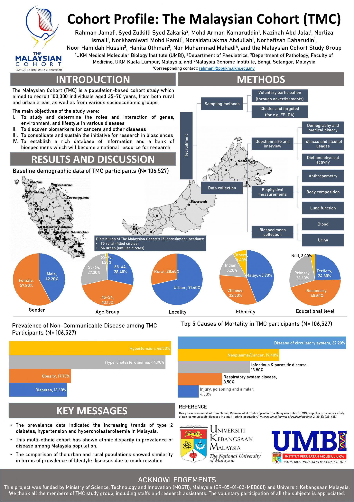
THE MALAYSIAN COHORT · UKM UMBI
Introduction to The Malaysian Cohort
The complete introduction, bilingual overview, historical video and infographic collection published by UKM.
Overview
The Malaysian Cohort (TMC) project is a national project that was initiated by the Prime Minister of Malaysia in 2004 and approved by the Cabinet in 2005. It is a long-term research project that aims to systematically build a comprehensive resource constituting a biobank of body fluid samples and big data on healthcare that is obtained from over 100,000 participants who originate from the general population of Malaysia. Investment in health care biotechnology is consistent with the core principles of Malaysia’s National Biotechnology Policy.
TMC is part of the Asia Cohort Consortium, an international collaborative consortium of eight countries including Japan, Taiwan, South Korea, China, India, Singapore, Malaysia and the United States. This consortium coordinates and combines resources and expertise from its eight members in the study of gene interactions, environments and lifestyle-causing diseases within each population. The results of such a combined study serve to accurately identify risk factors and discover new biomarkers for a variety of illnesses.
Bahasa Melayu · Pengenalan penuh
Projek The Malaysian Cohort (TMC) adalah projek nasional yang dimulakan oleh Perdana Menteri Malaysia pada tahun 2004 dan diluluskan oleh Kabinet pada tahun 2005. Projek ini merupakan projek penyelidikan jangka masa panjang yang bertujuan untuk membina sumber komprehensif yang bersistematik dalam membentuk biobank sampel cecair badan dan data besar mengenai penjagaan kesihatan yang diperolehi daripada lebih 100,000 orang peserta yang terdiri daripada populasi umum di Malaysia. Pelaburan dalam bioteknologi penjagaan kesihatan ini selaras dengan prinsip teras Dasar Bioteknologi Nasional Malaysia.
TMC juga merupakan sebahagian daripada Asia Cohort Consortium , sebuah konsortium kolaborasi antarabangsa dari lapan negara termasuk Jepun, Taiwan, Korea Selatan, China, India, Singapura, Malaysia dan Amerika Syarikat. Konsortium ini menyelaraskan dan menggabungkan sumber dan kepakaran dari lapan anggotanya dalam kajian interaksi gen, persekitaran dan penyakit penyebab gaya hidup dalam setiap populasi. Hasil kajian gabungan tersebut berfungsi untuk mengenal pasti faktor risiko dengan tepat dan menemui biomarker baru untuk pelbagai penyakit.
Historical video produced in 2010. Its figures describe that period.
THE FULL UKM COLLECTION
Infographics
All 13 published entries are retained. Open each PDF to read it at full size. Dates and statistics in these historical documents remain as originally published.
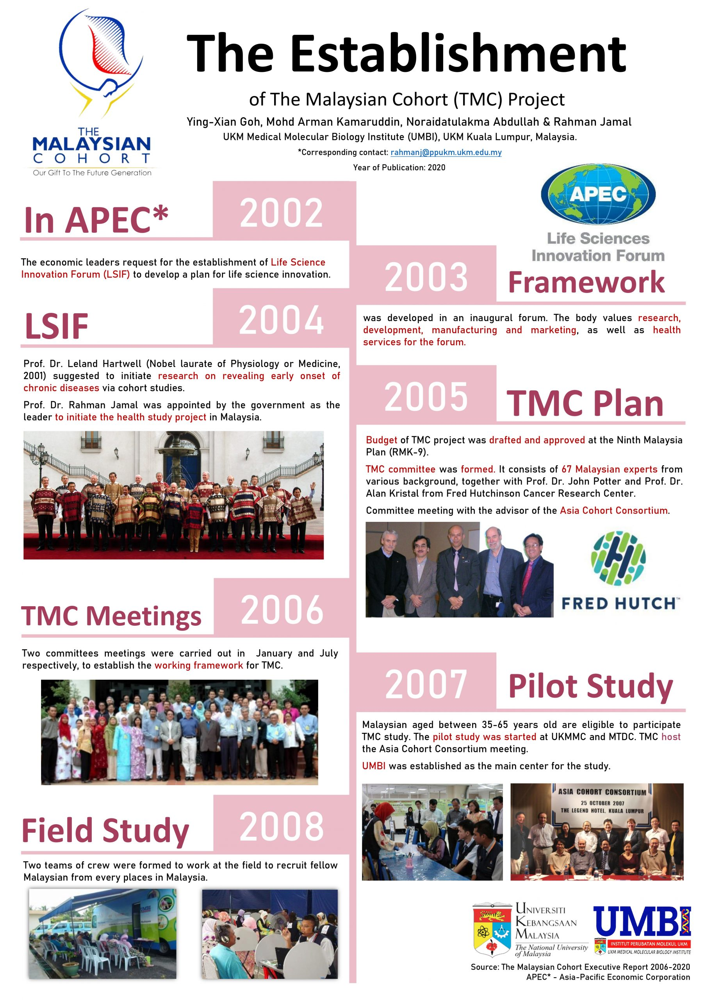
Establishment and milestone of TMC (1)
Open full infographic (PDF) ↗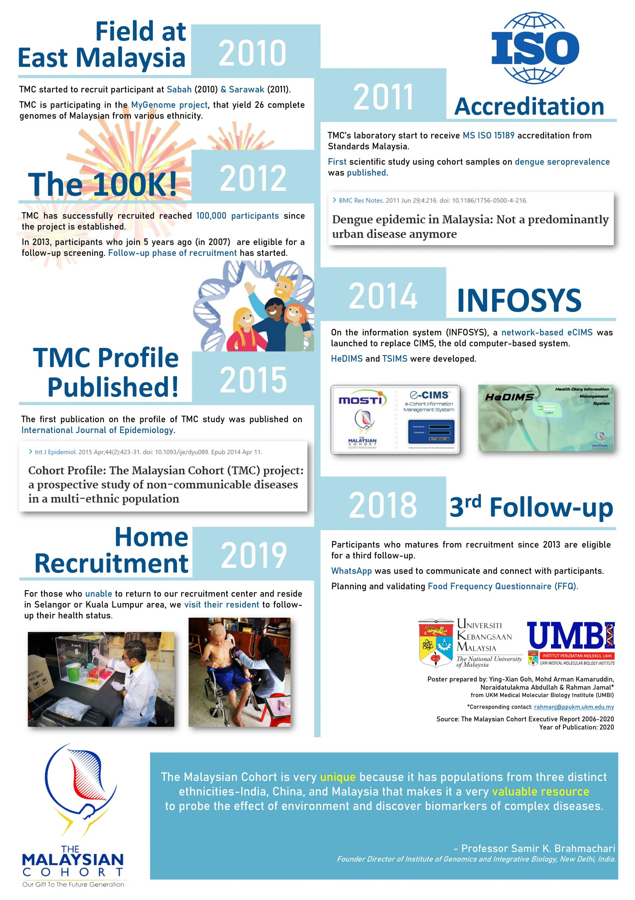
Establishment and milestone of TMC (2)
Open full infographic (PDF) ↗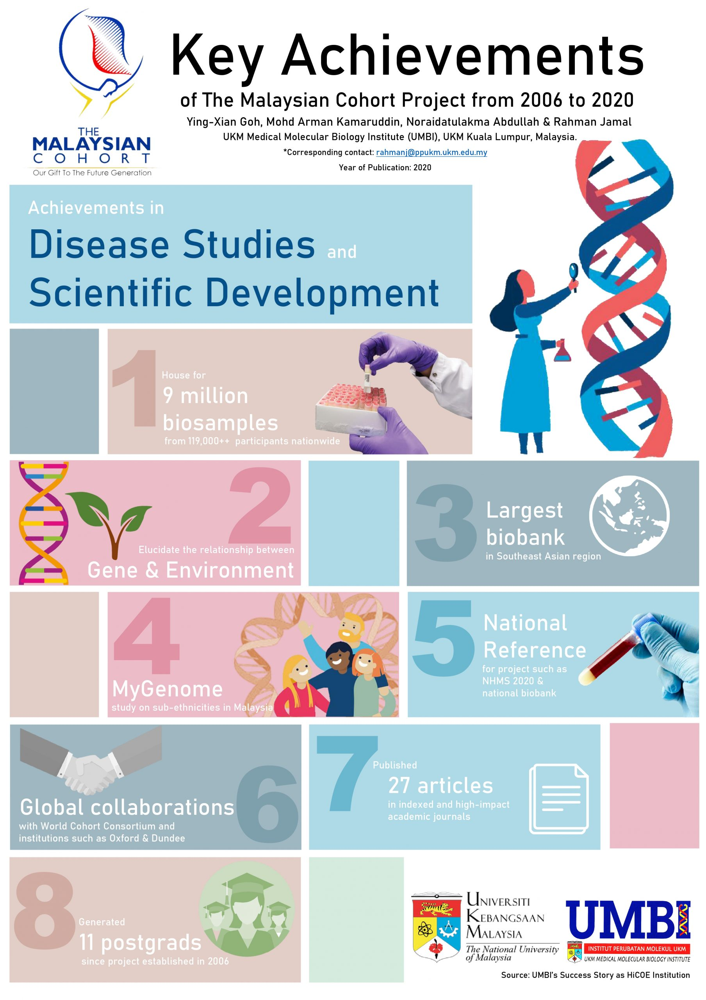
Key Achievements: Disease Studies and Scientific Development
Open full infographic (PDF) ↗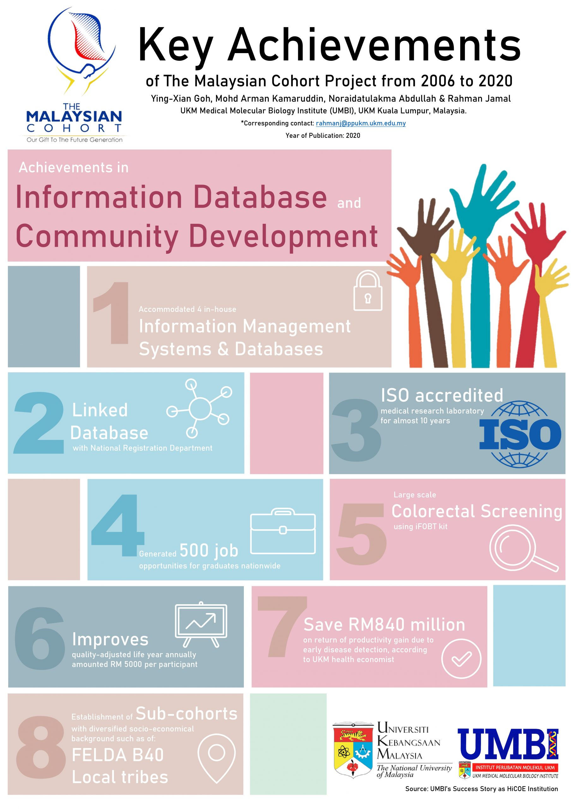
Key Achievements: Information Database and Community Developement
Open full infographic (PDF) ↗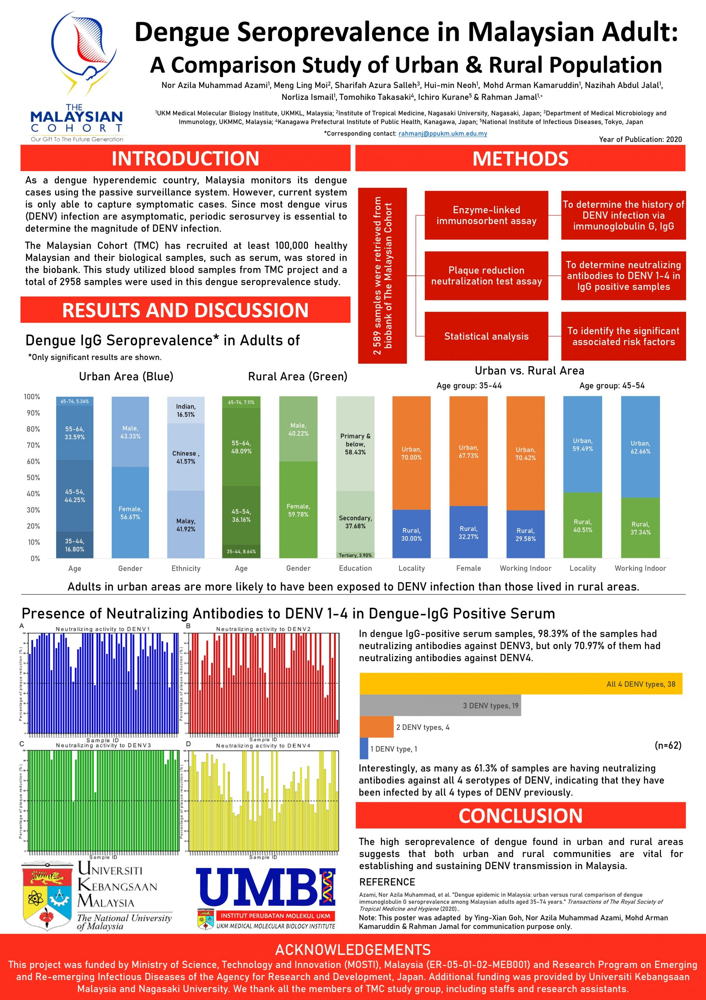
Dengue Seroprevalence in Malaysian Adult: A Comparison Study of Urban & Rural Population
Open full infographic (PDF) ↗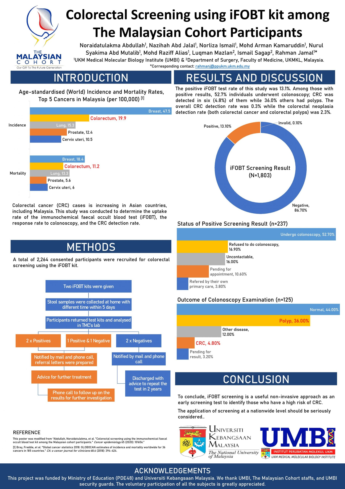
Colorectal Screening using iFOBT kit among TMC Participants
Open full infographic (PDF) ↗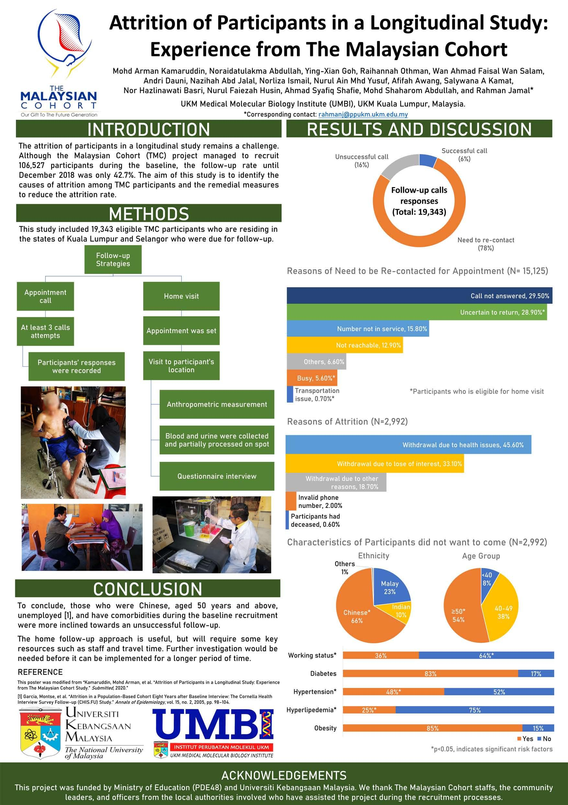
Attrition of Participants in a Longitudinal Study: Experience from TMC
Open full infographic (PDF) ↗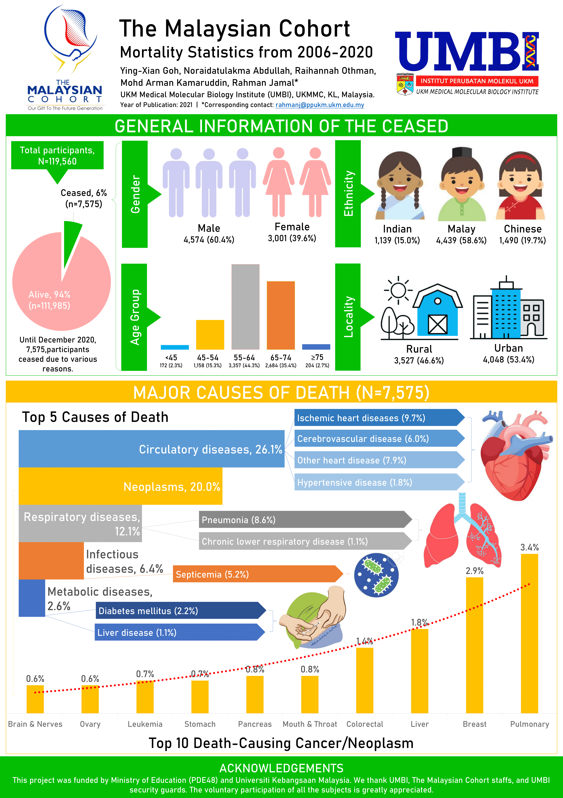
The Malaysian Cohort Mortality Statistics from 2006-2010
Open full infographic (PDF) ↗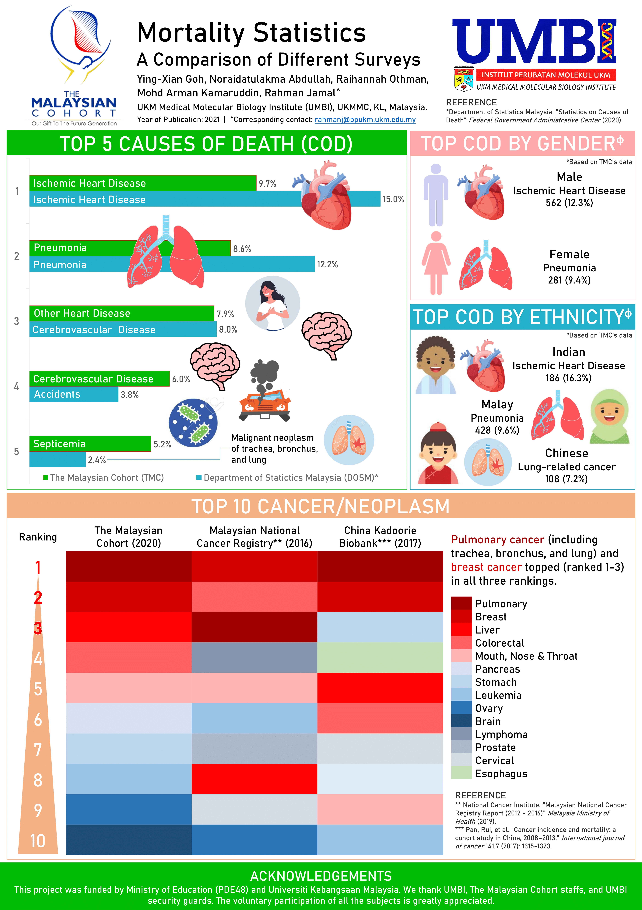
Mortality Statistics - A Comparison of Different Surveys
Open full infographic (PDF) ↗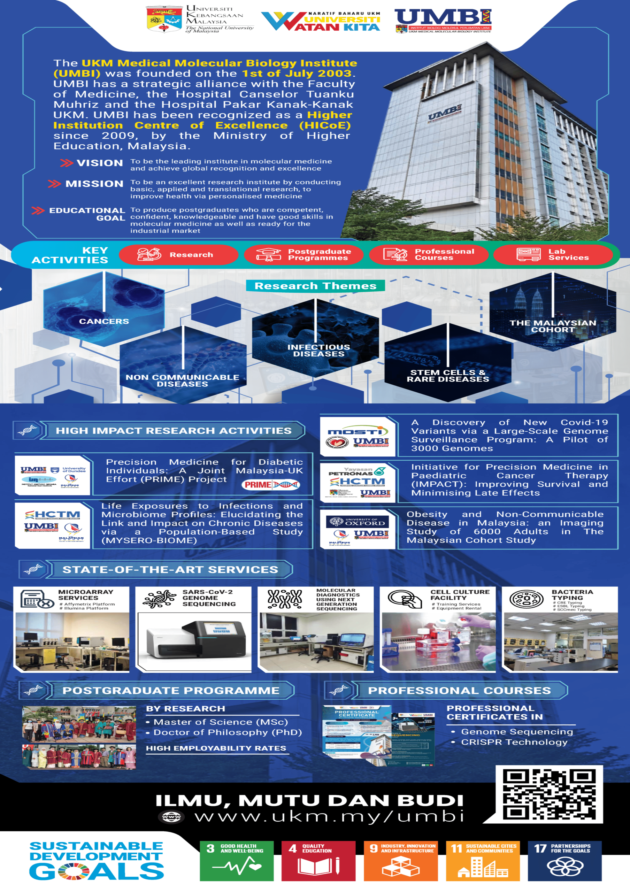
UMBI Intro
Open full infographic (PDF) ↗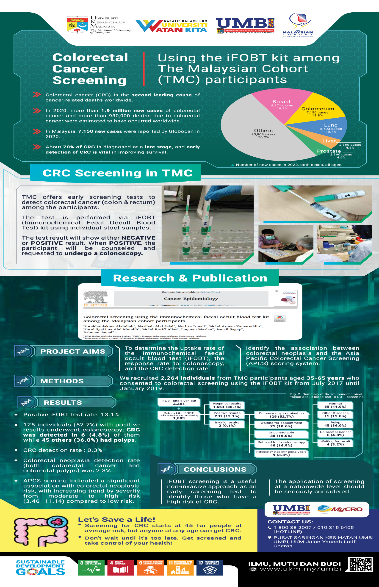
UMBI Biobank Colorectal Screening
Open full infographic (PDF) ↗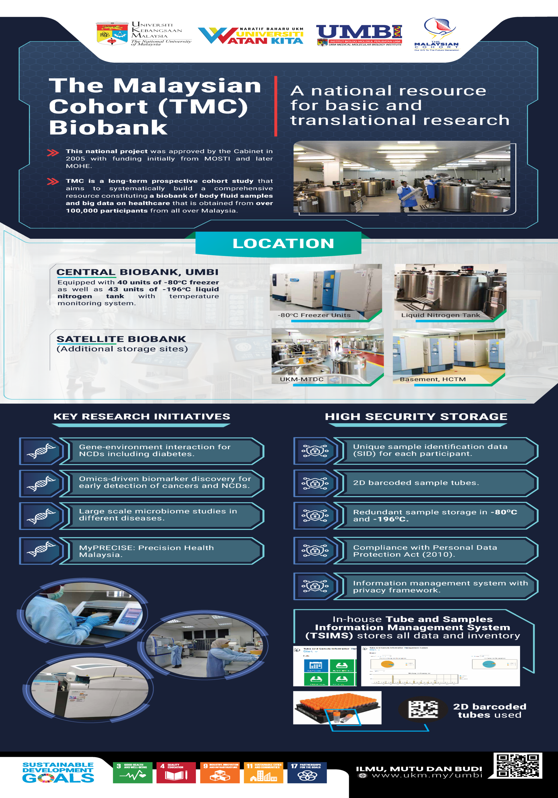
UMBI Biobank The Malaysian Cohort (TMC)
Open full infographic (PDF) ↗Source: UKM Introduction page. Checked 13 October 2026.